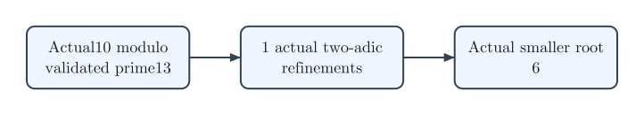
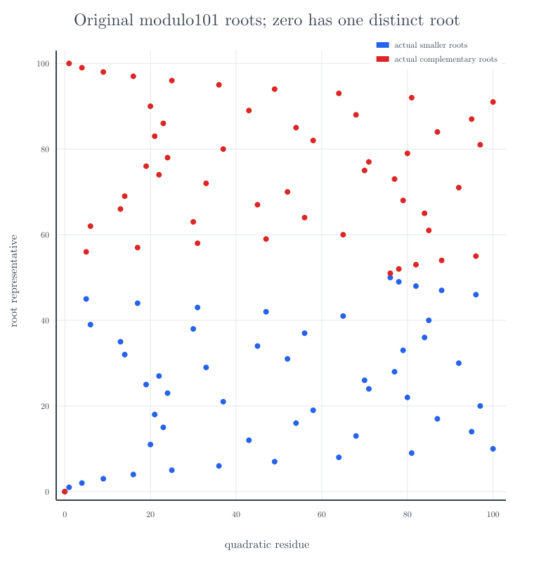
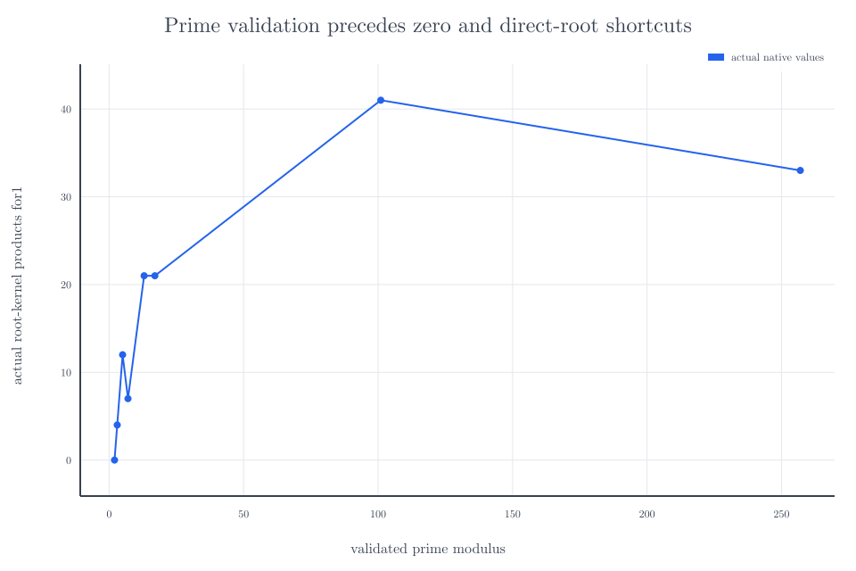
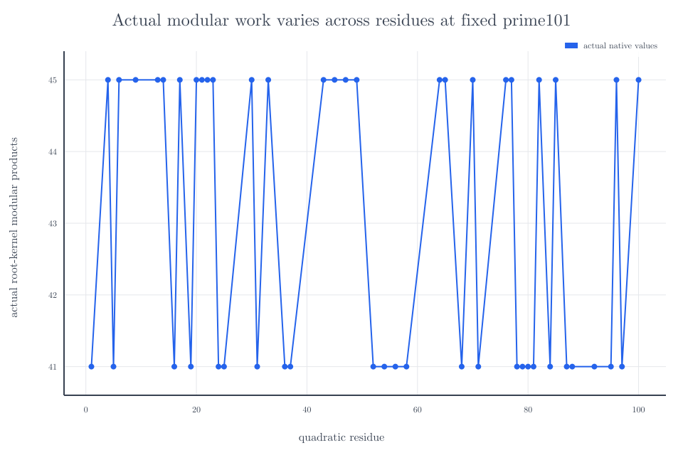

Tonelli-Shanks: actual prime-field two-adic refinements
Abstract
A modular square root needs a solvability test and, in the general case, progressively smaller two-adic error order. Actual candidate tests and refinement square chains retain the original examples and residue folding modulo101.
Mechanism and mathematical scope
Validate p as a prime over the complete uint64 range before any shortcut. For nonzero n, Euler criterion rejects nonresidues. If p mod4=3 use n((p+1)/4). Otherwise p-1=Q*2S with Q odd; choose the first sequential nonresidue z and initialize c=zQ,t=nQ,R=n((Q+1)/2),M=S. Find least i with t(2i)=1, use b=c(2(M-i-1)), update R<-R*b,t<-t*b2,c<-b2,M<-i modulo p. M strictly decreases. Exact unsigned128 products support full-width moduli. Sequential nonresidue search and deterministic primality validation have their own cost; the root-kernel product counter excludes validation and is not an unconditional complete O(log2 p) claim.
A tiny actual producing history
The table and native concept diagram read the same producing execution. Every block below is a complete editable C++ program.
#include <dm/dm.hpp>
int main() {
namespace a = dm::algorithms;
namespace g = dm::graphics;
std::filesystem::create_directories("build");
auto r = a::tonelli_shanks_trace(10, 13);
std::print("Actual nmodp {}, Q {}, S {}, chosen nonresidue {}; Euler test {}.\n\n| actual M before | i " "| actual tested t squares | b | c after | t after | R after |\n| ---: | ---: | --- | ---: | " "---: | ---: | ---: |\n",
r.reduced, r.odd_part, r.twos, r.nonresidue, r.euler);
for (const auto &s : r.steps)
std::print("| {} | {} | `{}` | {} | {} | {} | {} |\n", s.M_before, s.i,
s.squares, s.b, s.c_after, s.t_after, s.root_after);
g::Diagram concept_diagram(48, 1100);
concept_diagram.node("n0", {0, 0}, "Actual10 modulo validated prime13");
concept_diagram.node("n1", {5, 0},
std::format("{} actual two-adic refinements",
r.refinements));
concept_diagram.node("n2", {10, 0},
std::format("Actual smaller root {}", r.result.root));
concept_diagram.edge("n0", "n1").edge("n1", "n2");
concept_diagram.save_svg("build/tonelli_shanks_tiny.svg");
}Actual nmodp 10, Q 3, S 2, chosen nonresidue 2; Euler test 1.
| actual M before | i | actual tested t squares | b | c after | t after | R after |
|---|---|---|---|---|---|---|
| 2 | 1 | [12, 1] | 8 | 12 | 1 | 7 |

The retained original experiment
#include <dm/dm.hpp>
int main() {
namespace a = dm::algorithms;
namespace g = dm::graphics;
std::filesystem::create_directories("build");
std::print("| original n | prime p | root exists | actual smaller root |\n| ---: | ---: | --- | ---: " "|\n");
for (auto[n, p] : std::vector<std::pair<std::uint64_t, std::uint64_t>>{
{10, 13}, {2, 17}, {5, 7}
}) {
auto r = a::tonelli_shanks_run(n, p);
std::print("| {} | {} | {} | {} |\n", n, p, r.result.exists,
r.result.root);
}
std::vector<double> x, y, z;
std::print("\n| original residue modulo101 | actual smaller root | complementary root |\n| ---: | ---: " "| ---: |\n");
for (std::uint64_t n = 0; n < 101; ++n) {
auto r = a::tonelli_shanks_run(n, 101);
if (r.result.exists) {
auto other = r.result.root ? 101 - r.result.root : 0;
x.push_back(n);
y.push_back(r.result.root);
z.push_back(other);
std::print("| {} | {} | {} |\n", n, r.result.root, other);
}
}
auto chart = g::RPlot::create();
chart.points(x, y, "actual smaller roots", {37, 99, 235}, 4).points(
x, z, "actual complementary roots", {220, 38, 38}, 4).size(760, 800).margins(80, 40, 72, 88).xlim(-2, 103).ylim(-2, 103).title("Original modulo101 roots; zero has one distinct root").x_label("quadratic residue").y_label("root representative");
chart.save_svg("build/tonelli_shanks_original.svg");
}| original n | prime p | root exists | actual smaller root |
|---|---|---|---|
| 10 | 13 | true | 6 |
| 2 | 17 | true | 6 |
| 5 | 7 | false | 0 |
| original residue modulo101 | actual smaller root | complementary root |
|---|---|---|
| 0 | 0 | 0 |
| 1 | 1 | 100 |
| 4 | 2 | 99 |
| 5 | 45 | 56 |
| 6 | 39 | 62 |
| 9 | 3 | 98 |
| 13 | 35 | 66 |
| 14 | 32 | 69 |
| 16 | 4 | 97 |
| 17 | 44 | 57 |
| 19 | 25 | 76 |
| 20 | 11 | 90 |
| 21 | 18 | 83 |
| 22 | 27 | 74 |
| 23 | 15 | 86 |
| 24 | 23 | 78 |
| 25 | 5 | 96 |
| 30 | 38 | 63 |
| 31 | 43 | 58 |
| 33 | 29 | 72 |
| 36 | 6 | 95 |
| 37 | 21 | 80 |
| 43 | 12 | 89 |
| 45 | 34 | 67 |
| 47 | 42 | 59 |
| 49 | 7 | 94 |
| 52 | 31 | 70 |
| 54 | 16 | 85 |
| 56 | 37 | 64 |
| 58 | 19 | 82 |
| 64 | 8 | 93 |
| 65 | 41 | 60 |
| 68 | 13 | 88 |
| 70 | 26 | 75 |
| 71 | 24 | 77 |
| 76 | 50 | 51 |
| 77 | 28 | 73 |
| 78 | 49 | 52 |
| 79 | 33 | 68 |
| 80 | 22 | 79 |
| 81 | 9 | 92 |
| 82 | 48 | 53 |
| 84 | 36 | 65 |
| 85 | 40 | 61 |
| 87 | 17 | 84 |
| 88 | 47 | 54 |
| 92 | 30 | 71 |
| 95 | 14 | 87 |
| 96 | 46 | 55 |
| 97 | 20 | 81 |
| 100 | 10 | 91 |

Explicit controls
#include <dm/dm.hpp>
int main() {
namespace a = dm::algorithms;
namespace g = dm::graphics;
std::filesystem::create_directories("build");
std::vector<double> x, y;
std::print("| validated prime | radicand0 root | radicand1 smaller root | actual products for1 |\n| " "---: | ---: | ---: | ---: |\n");
for (std::uint64_t p : {2, 3, 5, 7, 13, 17, 101, 257}) {
auto z = a::tonelli_shanks_run(0, p);
auto r = a::tonelli_shanks_run(1, p);
x.push_back(p);
y.push_back(r.products);
std::print("| {} | {} | {} | {} |\n", p, z.result.root, r.result.root,
r.products);
}
for (std::uint64_t p : {0, 1, 4, 9, 15})
try {
a::tonelli_shanks_run(0, p);
} catch (const std::invalid_argument &) {
std::print("Malformed/nonprime modulus {} rejected even for radicand0.\n",
p);
}
auto plot = g::RPlot::create();
plot.lines(x, y, "actual native values", {37, 99, 235}).points(
x, y, {37, 99, 235}, 4).title("Prime validation precedes zero and direct-root shortcuts").x_label("validated prime modulus").y_label("actual root-kernel products for1");
plot.save_svg("build/tonelli_shanks_controls.svg");
}| validated prime | radicand0 root | radicand1 smaller root | actual products for1 |
|---|---|---|---|
| 2 | 0 | 1 | 0 |
| 3 | 0 | 1 | 4 |
| 5 | 0 | 1 | 12 |
| 7 | 0 | 1 | 7 |
| 13 | 0 | 1 | 21 |
| 17 | 0 | 1 | 21 |
| 101 | 0 | 1 | 41 |
| 257 | 0 | 1 | 33 |
Malformed/nonprime modulus 0 rejected even for radicand0. Malformed/nonprime modulus 1 rejected even for radicand0. Malformed/nonprime modulus 4 rejected even for radicand0. Malformed/nonprime modulus 9 rejected even for radicand0. Malformed/nonprime modulus 15 rejected even for radicand0.

Actual selected work and sensitivity
#include <dm/dm.hpp>
int main() {
namespace a = dm::algorithms;
namespace g = dm::graphics;
std::filesystem::create_directories("build");
std::vector<double> x, y;
std::print("| residue modulo101 | actual auxiliary tests | actual refinements | actual root-kernel " "products |\n| ---: | ---: | ---: | ---: |\n");
for (std::uint64_t n = 1; n < 101; ++n) {
auto r = a::tonelli_shanks_run(n, 101);
if (r.result.exists) {
x.push_back(n);
y.push_back(r.products);
std::print("| {} | {} | {} | {} |\n", n, r.nonresidue_tests,
r.refinements, r.products);
}
}
auto plot = g::RPlot::create();
plot.lines(x, y, "actual native values", {37, 99, 235}).points(
x, y, {37, 99, 235}, 4).title("Actual modular work varies across residues at fixed prime101").x_label("quadratic residue").y_label("actual root-kernel modular products");
plot.save_svg("build/tonelli_shanks_work.svg");
}| residue modulo101 | actual auxiliary tests | actual refinements | actual root-kernel products |
|---|---|---|---|
| 1 | 1 | 0 | 41 |
| 4 | 1 | 1 | 45 |
| 5 | 1 | 0 | 41 |
| 6 | 1 | 1 | 45 |
| 9 | 1 | 1 | 45 |
| 13 | 1 | 1 | 45 |
| 14 | 1 | 1 | 45 |
| 16 | 1 | 0 | 41 |
| 17 | 1 | 1 | 45 |
| 19 | 1 | 0 | 41 |
| 20 | 1 | 1 | 45 |
| 21 | 1 | 1 | 45 |
| 22 | 1 | 1 | 45 |
| 23 | 1 | 1 | 45 |
| 24 | 1 | 0 | 41 |
| 25 | 1 | 0 | 41 |
| 30 | 1 | 1 | 45 |
| 31 | 1 | 0 | 41 |
| 33 | 1 | 1 | 45 |
| 36 | 1 | 0 | 41 |
| 37 | 1 | 0 | 41 |
| 43 | 1 | 1 | 45 |
| 45 | 1 | 1 | 45 |
| 47 | 1 | 1 | 45 |
| 49 | 1 | 1 | 45 |
| 52 | 1 | 0 | 41 |
| 54 | 1 | 0 | 41 |
| 56 | 1 | 0 | 41 |
| 58 | 1 | 0 | 41 |
| 64 | 1 | 1 | 45 |
| 65 | 1 | 1 | 45 |
| 68 | 1 | 0 | 41 |
| 70 | 1 | 1 | 45 |
| 71 | 1 | 0 | 41 |
| 76 | 1 | 1 | 45 |
| 77 | 1 | 1 | 45 |
| 78 | 1 | 0 | 41 |
| 79 | 1 | 0 | 41 |
| 80 | 1 | 0 | 41 |
| 81 | 1 | 0 | 41 |
| 82 | 1 | 1 | 45 |
| 84 | 1 | 0 | 41 |
| 85 | 1 | 1 | 45 |
| 87 | 1 | 0 | 41 |
| 88 | 1 | 0 | 41 |
| 92 | 1 | 0 | 41 |
| 95 | 1 | 0 | 41 |
| 96 | 1 | 1 | 45 |
| 97 | 1 | 0 | 41 |
| 100 | 1 | 1 | 45 |

API and interpretation
Zero has a single distinct root, as does the nonzero residue modulo2; nonzero odd-prime residues have complementary distinct roots. The returned representative is the smaller one. Full uint64 modular arithmetic does not imply constant-time cryptographic behavior. Auxiliary/product/history exhaustion throws rather than reporting a mathematical nonresidue.
Reusable producers, fixtures and histories live in the canonical C++ library. Captured records own their values and do not come from a separate report replay. Selected counters and record/scalar policies are specified at their API boundaries; they are not peak-byte or wall-time budgets. Synthetic structural inputs are controlled fixtures for these mechanisms.
References
- Shanks, Five Number-theoretic Algorithms, Manitoba Conference on Numerical Mathematics (1973),51-70
Verified in the shared ten-document batch: 70 scoped native cases;20 directly
instrumented ASan/UBSan cases;75 executable public examples;387/387 definitions
across25 full scopes;10 hovers;9766 independent records/134784 checks;frozen
valid-input comparisons across all ten families;13 checkout/installed standalone
headers and linked ten-family consumer;40 executed programs and40 inspected
figures with both exports. Receipts: build/mepml-conversion/batch-394-403/.